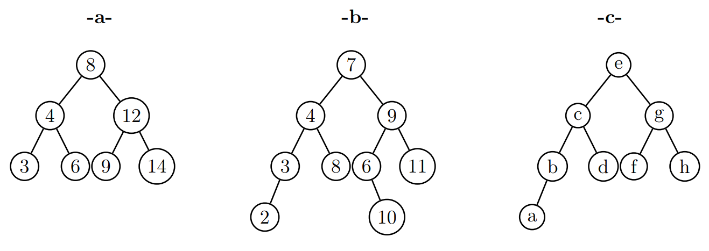

Un arbre binaire de recherche (ABR) est un arbre binaire dont les noeuds contiennent des clés (valeurs) que l’on peut comparer comme des nombres entiers ou les lettres de l’alphabet.
Un ABR respecte les règles suivantes:
Pour un noeud donné:
Toutes les clés situées dans l’arbre fils gauche sont inférieures à la clé du noeud ;
Toutes les clés situées dans l’arbre fils droit sont supérieures à la clé du noeud ;
Toutes les clés d’un ABR sont distinctes, pas de doublon.
Les arbres ci-dessous sont-ils des arbres binaires de recherche (ABR) ? Justifier votre réponse.

Un arbre binaire de recherche contient les nombres entiers de 1 à 10. Représenter dans chacun des cas suivants cet arbre binaire sachant que la racine est de hauteur 0 et que:
la racine de l’arbre est le nombre 5 et sa hauteur est minimale.
la racine de l’arbre est le nombre 3 et sa hauteur est 3.
la racine de l’arbre est le nombre 9 et la hauteur est maximale.
Dans cette partie, nous allons créer deux fonctions pour rechercher et insérer une valeur dans un ABR.
La recherche d’une valeur dans un ABR nécessite de parcourir l’arbre jusqu’à trouver la valeur si elle est présente. Le parcours d’un arbre est récursif, donc la recherche d’une valeur s’appuie sur la récursivité.
On donne ci-après l’algorithme de recherche d’une valeur x dans un arbre:
si arbre vide:
valeur de x non présente
sinon:
si x < valeur du Noeud visité:
on renvoie la recherche de x dans l'arbre gauche
sinon si x > valeur Noeud visité:
on renvoie la recherche de x dans l'arbre droit
sinon:
valeur de x présente
a. Écrire la fonction appartient qui prend en paramètre la valeur \(x\) cherchée et un arbre binaire de
recherche. Cette fonction est de type booléen, elle renvoie True si la valeur est dans l’arbre, False sinon.
Vérifier votre fonction et votre méthode avec l’arbre a créé dans la première partie.
L’ajout d’une valeur dans un ABR nécessite aussi le parcours récursif de l’arbre et l’ajout d’un Noeud .
On donne ci-après l’algorithme de l’ajout d’une valeur x dans un arbre a.
si arbre a est vide:
a = Arbre(x)
sinon:
si x < valeur du noeud visité:
si le noeud gauche vide:
noeud gauche = Noeud(x)
sinon:
on ajoute x dans arbre gauche
si x > valeur noeud visité:
si le droit vide:
noeud droit = Noeud(x)
sinon:
on ajoute x dans arbre droit
renvoi de arbre a
Écrire la fonction ajoute qui prend en paramètre la valeur x à ajouter et un arbre binaire de recherche. Elle renvoie un arbre binaire avec la valeur ajoutée.
Vérifier votre fonction avec l’arbre a créé dans la première partie en y ajoutant différentes valeurs.